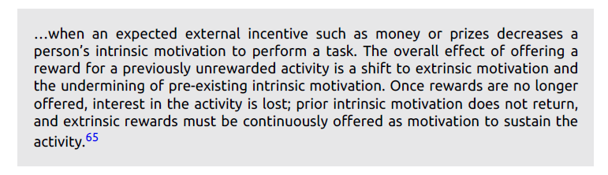
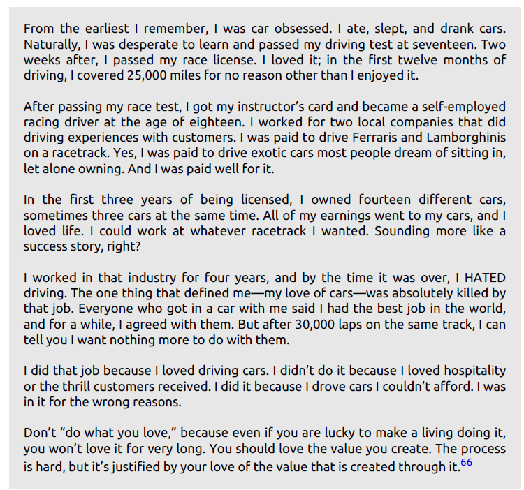

The now-famous statement has morphed into its syrupy cousin , "Do what you love." And every time I hear it, I lose another millimeter of my molars.
But wait, there’s more.
“Do what you love” also has a twin: the pithy proverb “Follow your passion.” Again, another perilous dose of direction, usually dispensed by unknown bloggers with unknown track records who unknowingly don’t know the theology is hogwash.
Put ’em together and what you get is The Wonder Twins of Epically Bad Life Advice.
This cattle call of the self-development world has spawned a worshiping army of “passionites,” where “do what you love” and “follow your passion” supplant demand, business models, and economics.
Everyone is passionate about one thing or another. The problem is no one interviews passionate failures. Failed passionites have no stage, no audience, no one salivating at their greatness. The bankrupt passionite who’s followed his passion for twenty years and didn't get featured in Inc. Magazine isn’t dispensing advice.
Think of it this way.
Are American Idol winners passionate about singing? Of course they are. Does it make sense to sing auditions when you’re dispassionate about it? Therefore, the 190,000 people who also auditioned and went home crying failures were also passionate. Will you ever hear from them? Nope.
Let me put it another way. You’re at a fancy restaurant and order steak, medium rare. The steak hits your table and it tastes like grilled leather and isn’t fit for a vulture. You complain to the server and refuse to pay. The server retrieves the owner, who’s also the chef. When the owner/chef arrives at your table, you explain that your meal tastes like baked cardboard and refuse payment. He replies, “I’m sorry, sir, but I love to cook. And since I love cooking, you must also love what I do.”
You see, at the end of the day, no one cares about the motives driving you. No one gives a shit that you love what you do! No one cares that you want to “be your own boss,” “get rich,” or any other selfishly conceived motive.
Once again, the point needs to be driven home: no one fucking cares.Your parents said you were special. Maybe, but in the eyes of the market, it’s a fantastic lie. The market is one selfish rat, and if you insist on being selfish yourself, you don’t have a prayer. When passion doesn’t solve people’s problems, passion doesn’t pay bills.
Does a market even exist for what you love? Do other people need what you love, and if so, are you exceptional at it while communicating a unique value proposition? If you aren’t, be prepared to prostitute your love in the name of paying bills.
1. Markets flooded with “do what you lovers” are extremely crowded and ripyour- hair-out competitive. Does the Internet really need 190,000 weight-loss blogs? Yes, I get it—you lost weight; you’re passionate about the accomplishment; now you want to spread the gospel. But so are 400,000 other people, and unless you’re doing something different, you remain unremarkable.
Passion didn’t pay the bills because passion didn’t hit a market need.
“Should I start a fitness blog?” “Do I start a car social network?” NOTE:Always keep this in mind-- , “What value are you offering” or “What are you doing different that hasn’t been beaten to death elsewhere?” the answer is always the same: nothing. For the lost, “do what you love” and “follow your passion” are suddenly a business model impervious to market economics.
2. Take for example personal training—a career rife with “do what you love” and “follow your passion” go-getters. The fitness person thinks, “Hey, I love fitness, so I’ll be a personal trainer!” Great, except you are an ant on an anthill. Thousands more think identically, and as a result, the aggregate trainer pool could fill fifty coliseums. Thousands are eager to undercut your livable wage. And once that happens, guess what? Your love withers into hate.
Another injurious effect stemming from the dynamic duo of bad advice is opportunity compression. Opportunity compression limits your exposure to new opportunities in alternative industries that are ripe for new value offerings.
For example, if you’re passionate only about sewing and scuba diving, you will compress your available opportunities to those industries only. If those industries represent only .00002 percent of GDP, you limit yourself to that small pool of opportunity. Don’t microscope yourself into a puddle when you should be surveying the ocean.
The fourth reason why “love” and “passion” shouldn’t be your bread-maker is called the overjustification effect. The overjustification effect is a psychologically studied phenomenon lending credibility to the idea that “do what you love” and “follow your passion” are destructive career advice. Namely, once you get paid extrinsic rewards for something you once did freely due to sheer intrinsic motives, your interest in that activity suffers. According to Wikipedia via Psychology: The Science of Behavior, the overjustification effect occurs…
So, if you’re doing something freely because you’re passionate about it, suddenly getting paid for it might poison that passion.
“Do what you love” can kill your love.
Here's an example~~
I have taken this example from the fastlane forum ,runned by MJ-DeMarco The final reason why “do what you love” and “follow your passion” are crummy advice is perhaps the most potent and destructive: they’re Trojan horses into a fixed mindset, a justification to avoid pain and discomfort, and hence, inhibit growth. Let me explain...
And this highlights the ultimate irony: the secret to success isn’t “do what you love” but “do what you hate.” How much pain and anxiety you’ll endure tells me how much success you’re willing to achieve. You see, passion doesn’t move me to do programming or build apps. And passion certainly doesn’t put me in sweat when I program for straight 6 hours
In the end, the wonder twins maliciously give you good cause to decline anything that looks like work, seems discomforting, and isn’t aligned with passion.
Simply put, And in the world of passionites, it’s perfectly justifiable because, after all, Steve Jobs says, “Love what you do.”
So… was Steve Jobs’s advice, “Love what you do,” wrong? Should we ignore the billionaire’s advice..? what I can say is, he wasn’t giving us the golden key unlocking the secret into pain-free success. He instead gave us insight into the joy and love one receives when the world values your value. Notably, when the world kicks on your feedback loop and says “This is awesome” or “I like this; here’s my cash,” you too will love what you do. Let’s look back at the motivation cycle and create something more valuable and that is how you fall in love with what you do.